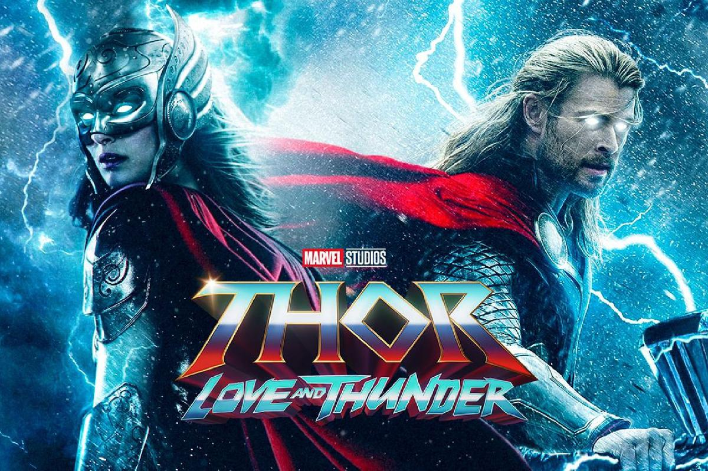

Fantástico. Acción | Superhéroes. Cómic. Marvel Comics. MCU. Secuela
Disfruta la función

Sinopsis
El Dios del Trueno (Chris Hemsworth) emprende un viaje que no se parece en nada a lo que se ha enfrentado hasta ahora: una búsqueda de la paz interior. Pero el retiro de Thor se ve interrumpido por un asesino galáctico conocido como Gorr el Carnicero de Dioses (Christian Bale), que busca la extinción de los dioses. Para hacer frente a la amenaza, Thor solicita la ayuda del Rey Valkiria (Tessa Thompson), de Korg (Taika Waititi) y de su ex novia Jane Foster (Natalie Portman) que, para sorpresa de Thor, empuña inexplicablemente su martillo mágico, Mjolnir, como la Poderosa Thor. Juntos, se embarcan en una aventura cósmica en la que tendrán que descubrir el misterio de la venganza del Carnicero de Dioses y detenerlo antes de que sea demasiado tarde.